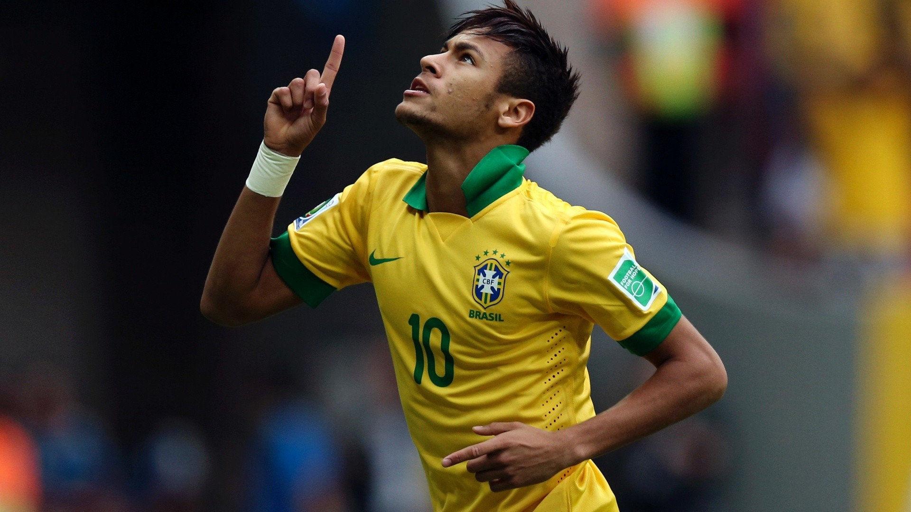

Neymar Jr na Seleção
Neymar Jr estreou na Seleção Brasileira em agosto de 2010, aos 18 anos, marcando um gol logo em sua primeira partida contra os Estados Unidos. Desde então, ele se tornou um dos principais jogadores do Brasil, liderando a equipe em diversos torneios internacionais.
Com sua habilidade técnica, visão de jogo e talento para marcar gols, Neymar rapidamente se estabeleceu como uma das maiores estrelas da Seleção. Ele foi o protagonista na conquista da Copa das Confederações em 2013, sendo eleito o melhor jogador do torneio após marcar quatro gols, incluindo um na final contra a Espanha.
Em 2016, Neymar levou o Brasil à sua primeira medalha de ouro olímpica no futebol, um feito histórico alcançado no Maracanã. Como capitão, ele foi decisivo, marcando o gol que abriu o placar na final contra a Alemanha e convertendo o pênalti decisivo na disputa por pênaltis.
Neymar também desempenhou um papel crucial nas campanhas do Brasil nas Copas do Mundo de 2014 e 2018, embora as expectativas de título não tenham sido alcançadas. Ainda assim, ele se consolidou como um dos maiores artilheiros da história da Seleção Brasileira, ultrapassando lendas como Romário e Zico.
Apesar das lesões que o afastaram de algumas competições importantes, Neymar continua sendo uma peça central da Seleção Brasileira, com os olhos do mundo voltados para ele em busca de futuras conquistas, incluindo a tão sonhada Copa do Mundo.
